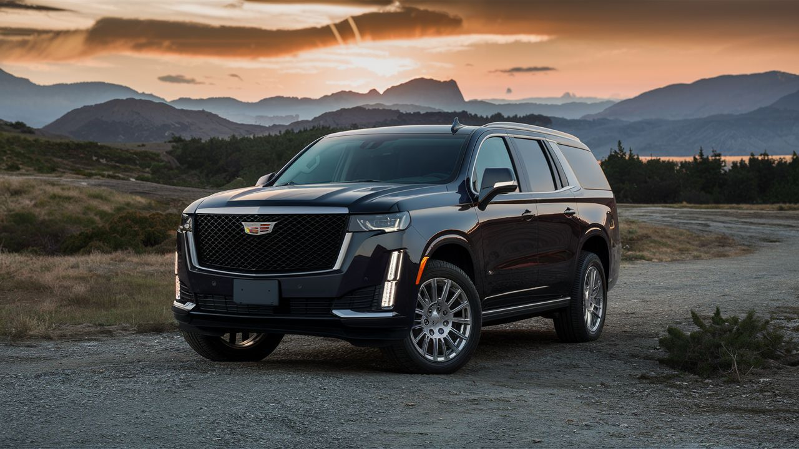
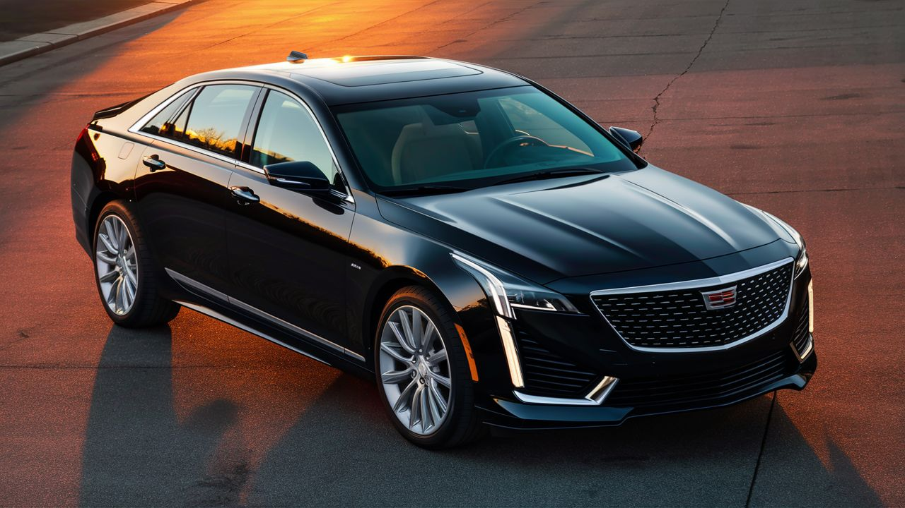
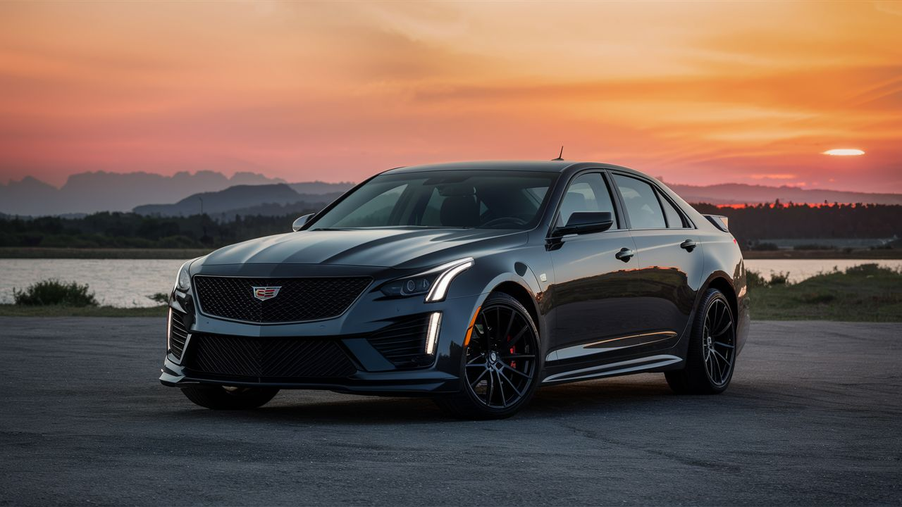

Cadillac
Cadillac es una marca estadounidense de automóviles de lujo, fundada en 1902 por Henry M. Leland, William Murphy y Lemuel Bowen. Inicialmente comenzó como una empresa de carrocerías, pero pronto se convirtió en un fabricante de vehículos completos. La marca se destaca por su compromiso con la innovación, el diseño distintivo y la calidad en sus productos. Cadillac es reconocida por su amplia gama de vehículos que incluyen sedanes, SUVs y modelos eléctricos5 . Cadillac es conocida por su compromiso con la tecnología, la elegancia y el rendimiento en sus vehículos. La marca ha participado en competencias automovilísticas como las 24 Horas de Le Mans, consolidando su reputación en la industria automotriz de lujo. Actualmente, Cadillac se mantiene a la vanguardia con modelos como el Escalade, el XT6 y el Lyriq, que combinan elegancia, confort y tecnología avanzada.
Modelos destacados
Cadillac Escalade ESV

Motor: V8 de 6.2 litros Potencia: 420 caballos de fuerza Características: SUV de lujo de gran tamaño, confort excepcional, tecnología avanzada. Precio: Desde aproximadamente $80,000 USD.
Cadillac CT6
Motor: V6 de 3.6 litros Twin-Turbo o V8 de 4.2 litros Blackwing Twin-Turbo Potencia: 404 - 550 caballos de fuerza Características: Berlina de lujo, diseño elegante, tecnología innovadora. Precio: Desde aproximadamente $60,000 USD.
Cadillac CT5-V Blackwing
Motor: V8 de 6.2 litros Supercharged Potencia: 668 caballos de fuerza Características: Berlina deportiva de lujo, rendimiento excepcional, lujo refinado. Precio: Desde aproximadamente $85,000 USD.